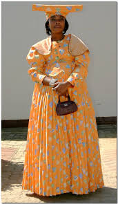

The Baherero are an ethnic group inhibiting parts of Southern Africa. Most of them reside in Namibia while others are found in Botswana and Angola
The Herero originate from the Eastern or Central Africa and migrated across the Okavango river into the Northteastern Namibia in the early 17TH century.
In the late 19th century, European settlers entered their land and settled there permanently. The German acquired land from the Hereroand established farms there. In 1883 a contract was entered into with the native elders however later the exchange escalated into the basis of German colonial rule. Their territiry became a German colony inder the name of German South West Africa.
However, conflict soon arose between the German colonists and the Herero. These conflicts went for long periods, where there was genocide which saw the remaining people of the tribe flee across the borfer into Botswana
| CATTLE | the herero are traditionally catlle herding pastoralists who rate status on the number of cattle owned. |
| DECENT |
the Herero are of bilateral descent system. Where a person traces their heritage through both their father's lineage and mother's lineage |
| LANGUAGE |
the herero language otjiherero is the main unifying link among the Herero people Other Languages
|
| BELIFS |
Omui: Omuroi is a Herero noun describing someone who is suspected of being a witch who flies at night, or someone
who performs witchcraft or rides people at night. More sort of a ghost person, some claim to struggle with sleeping
when a certain person is around due to their belief of that person possessing omuroi.
|
Baherero staple food is omaera,osopa and meat
Baherero women are identified by otjikaiva(artistic head wrapping) and ohorekeva(long dress)

| CATTLE |
Cattle are most valued domestic animals in the Herero culture, therefore cattle herding is the most significant
and substantial activity for the Herero people.
|
| GOATS AND SHEEP |
Goats and sheep are also used for meat consumption, and the goat milk is used to make dairy products. The goat skin
has a significant use as it can be used to carry babies on the back and create household ornaments.
|
| HORSES AND DONKEYS |
Horse and Donkeys are normally used for transportation. In cases of herding or searching for lost domestic animals the Herero people engage horses to carry out these activities. Herero people consume donkey meat too but rarely consume horse meat. |
| DOGS AND CHICKENS |
When males go for hunting they use to dogs to help in hunting for purposes and also for herding. The Herero people tend to hunt to acquire meat,hides and horns so as to barter for goods such as sugar, tea and tobacco. Chickens are kept for meat consumption and breeding eggs. |